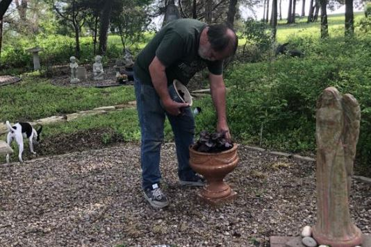
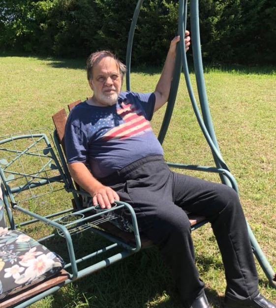
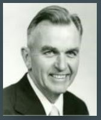

E-SYSTEMS/RAYTHEON RETIREES LUNCH GROUP
By Eileen Wahlstrom
June 24, 2020
Remember
Stay home, if you must go out please continue to practice social distancing of six feet and personal hygiene measures. Check in on your family, friends and neighbors, especially those who are elderly. Support local restaurants and food establishments by ordering delivery or curbside service. Follow the Library and Parks and Rec Facebook pages for fun stuff to do virtually.
Stay away from the virus of 2020
Present: 0
First Time: 0
Long Time: 0
Guest: 0
SICKNESS:
I am so relieved to say we have no reported virus cases in our group. Let’s keep it that way and take this seriously! If you feel sick, please isolate until you know what’s wrong. If you need anything, and that goes for everyone, reach out through email, Facebook, phone. We are in this together.
Chris Reynolds: Had her hip replacement surgery March 16th. Here is her latest update from Facebook dated June 4th.
“Was released from PT today since Cory (great and fun therapist at Baylor Scott and White Rehab in Rowlett) and I agreed there will be no further improvement until my knee replacements. Hip is great and I will get probably my left knee done first as soon as I can schedule it after seeing Dr. Lancaster on June 18. 2020 - a year that will live in infamy!"
George Carlsness: Update on George from Joanne’s Facebook post:
George is up and about and tending to his prayer garden.
7/14/20
Update from George’s surgical oncologist:
"At 3 months past his surgery, George’s CT scan results were good, no sign of tumors. Everything looked good with his digestive system from the surgery. We thank God for this progress and good report. Thank you all for your thoughts, prayers and support for the past 3 months. Please continue to pray for him as he continues the remainder of his chemotherapy. He has completed three treatments and has nine treatments to go, ending sometime near Thanksgiving"


Bobby Gambrell: His wife Carolyn is progressing, two heart pacemaker surgeries.
Pat Bryner: Stroke March 12th. Is rehabbing with her daughters up north. You can send Pat a card at this address: 10845 Kingston Ave., Huntington Woods, MI 48070
Deaths
Dr. Phil Rogers
April 1925 - August 2014

Rogers, Phil H. Beloved husband, father, grandfather and great grandfather, was born April 13, 1924 in McKinney, Texas and passed away August 29, 2014 in Dallas, Texas. He was preceded in death by his youngest son, Phil H. Rogers Jr. He is survived by Josephine Rogers, his wife of 68 years; children, Rhea and husband, Dave, Hugh and wife, Joyce, JoAnn and husband, Lowell and daughter in-law Judy. He is also survived by 8 grandchildren and 6 great grandchildren. A talented and creative engineer, Phil graduated with a B.S. in Electrical Engineering from The University of Texas, where he served as president of the Longhorn band 1943 to 1944. After serving in the Navy, where he met his future bride and love of his life, he earned his PhD in Electrical Engineering from the University of Michigan. He taught at the University of Michigan and the University of Arizona before entering industry. His career included work at Collins Radio Co. and E-Systems where he retired as a Vice President. He will be dearly missed by family and friends. Visitation will be from 6:00-8:00 PM on Wednesday, September 3, 2014 at Restland Funeral Home. The funeral service will be at 12:30 PM on Thursday, September 4, 2014 in Wildwood Chapel at Restland Funeral Home, 13005 Greenville Ave, Dallas, TX, 75243 with graveside services in Restland Memorial Park. In lieu of flowers, donations may be made in his name to Cornerstone Christian Church, 2700 Christian Parkway, Dallas, TX 75234.
Announcements
Darrell Lancaster proposed an idea to create a repository for retirees’ experiences and funny/interesting stories that later can be compiled into a collection and available for all to enjoy. We don’t want to lose these memories. Be looking for a place to submit your own stories soon.
Historical Marker Update:
Jim Gray told me he has made a connection, Mitch Bates – Asst. City Manager, that could open doors for our marker. Stay tuned for more info!
I have name tags for the following people. One line tags are $4.00 and two line tags are $5.00. If anyone needs a name tag, please send your name (as you would like it on the name tag) to me,
emmawahlstrom@aol.com or text it to me at 469-475-4884. A second line is optional if you want to include your service dates.
- Gene Carlton
- Sam Wilson
- Chris Berry
- Rick Lowe
- Rich Marks
Mark your calendars! The next meeting will be on May 27th if the COVID-19 is contained.
I’m still collecting eye glasses for donation to the Lion’s Club. Thank you all who have donated.
Eileen Wahlstrom